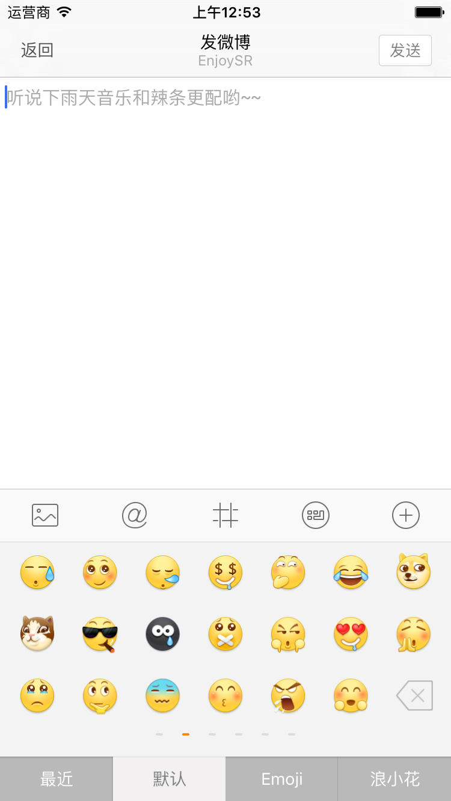
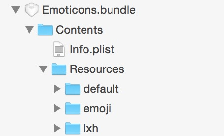
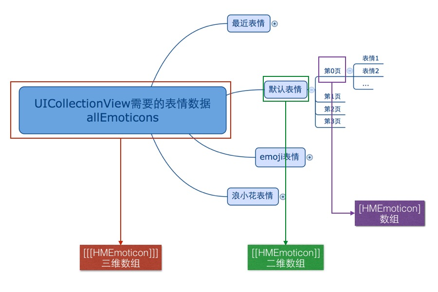

在 Compose 文件夹下的 View 文件夹下新建文件夹 EmoticonKeyboard，表情键盘所涉及到的View都放在这个文件夹下

UIStackView 来实现UICollectionView 实现Cell 来表示UICollectionView 中的一组HMEmoticonKeyboardHMEmoticonKeyboard 继承于 UIViewclass HMEmoticonKeyboard: UIView {
override init(frame: CGRect) {
super.init(frame: frame)
setupUI()
}
private func setupUI(){
// 设置背景颜色
backgroundColor = UIColor(patternImage: UIImage(named: "emoticon_keyboard_background")!)
}
required init?(coder aDecoder: NSCoder) {
fatalError("init(coder:) has not been implemented")
}
}
HMComposeViewController 中添加切换键盘的方法 switchKeyboard/// 切换键盘
private func switchKeyboard(){
}
HMComposeToolBar 上的表情按钮的时候调用方法// MARK: - HMComposeToolBarDelegate
func composeToolBarButtonDidSelected(type: ComposeToolBarButtonType) {
switch type {
case ...
case .Emoticon:
switchKeyboard()
}
}
/// 键盘
private lazy var emoticonKeyboard: HMEmoticonKeyboard = {
let keyboard = HMEmoticonKeyboard()
keyboard.size = CGSizeMake(SCREENW, 216)
return keyboard
}()
inputView属性inputView 为 nil 代表当前是系统键盘/// 切换键盘
private func switchKeyboard(){
// 先取消第一响应者
textView.resignFirstResponder()
// 切换键盘，如果是系统键盘就切换成表情键盘，否则就切换成系统键盘
textView.inputView = textView.inputView == nil ? emoticonKeyboard : nil
// 成为第一响应者，显示新切换出来的键盘
textView.becomeFirstResponder()
}
运行测试：在点击键盘切换的时候 toolBar 会跳动，原因是点击切换键盘会先取消第一响应者，这个时候键盘要退下，toolBar 跟着往下移动。当键盘切换完了之后又变成第一响应者，这个时候 toolBar 还没有往下移动完毕，又需跟着键盘要往上移动，所以形成了这样的效果，解决方式：切换键盘在取消第一响应者的时候不执行动画
isToolBarAnim，默认为 true/// 底部 toolBar 是否执行动画
private var isToolBarAnim = true
/// 键盘 frame 改变通知调用的方法
@objc private func keyboardWillChangeFrame(noti: NSNotification){
// 如果不执行动画，直接返回
if !isToolBarAnim {
return
}
...
}
/// 切换键盘
private func switchKeyboard(){
// 取消第一响应者不执行动画 ，置为 false
isToolBarAnim = false
// 先取消第一响应者
textView.resignFirstResponder()
// 切换键盘，如果是系统键盘就切换成表情键盘，否则就切换成系统键盘
textView.inputView = textView.inputView == nil ? emoticonKeyboard : nil
// 切换 toolBar 图标状态
composeToolBar.isEmoticonKeyboard = textView.inputView != nil
// 再次成为第一响应者执行动画 ，置为 true
isToolBarAnim = true
// 成为第一响应者，显示新切换出来的键盘
textView.becomeFirstResponder()
}
切换 toolBar 上键盘图标
在 HMComposeToolBar 中提供 isEmoticonKeyboard
/// 是否是显示的表情键盘
var isEmoticonKeyboard: Bool = false {
didSet{
if isEmoticonKeyboard {
// 显示系统键盘的图标
}else{
// 显示表情键盘的图标
}
}
}
在 HMComposeToolBar 添加子控件的时候记录表情切换按钮
addChildItem 方法添加返回值添加返回值
/// 添加子控件
///
/// - parameter imageName: 图片名字
/// - parameter type: 当前按钮的类型
private func addChildItem(imageName: String, type: ComposeToolBarButtonType) -> UIButton {
...
return button
}
/// 表情键盘切换按钮
private var emoticonButton: UIButton?
...
// 在添加的时候记录
emoticonButton = addChildItem("compose_emoticonbutton_background", type: .Emoticon)
isEmoticonKeyboard 的 didSet 方法/// 是否是显示的表情键盘
var isEmoticonKeyboard: Bool = false {
didSet{
// 默认是表情按钮图标
var imageName = "compose_emoticonbutton_background"
if isEmoticonKeyboard {
// 显示系统键盘的图标
imageName = "compose_keyboardbutton_background"
}
self.emoticonButton!.setImage(UIImage(named: imageName), forState: UIControlState.Normal)
self.emoticonButton!.setImage(UIImage(named: "\(imageName)_highlighted"), forState: UIControlState.Highlighted)
}
}
HMEmoticonToolBarclass HMEmoticonToolBar: UIStackView {
override init(frame: CGRect) {
super.init(frame: frame)
// 设置布局方向
axis = UILayoutConstraintAxis.Horizontal
// 设置子控件的分布方式 -> 填充，大小相等
distribution = UIStackViewDistribution.FillEqually
setupUI()
}
private func setupUI(){
// 添加 4 个按钮
}
required init?(coder aDecoder: NSCoder) {
fatalError("init(coder:) has not been implemented")
}
}
private func addChildItem(title: String, bgImageName: String) {
let button = UIButton()
// 设置文字以及字体大小
button.titleLabel?.font = UIFont.systemFontOfSize(14)
button.setTitle(title, forState: UIControlState.Normal)
// 设置不同状态的背景图片
button.setBackgroundImage(UIImage(named: "\(bgImageName)_normal"), forState: UIControlState.Normal)
button.setBackgroundImage(UIImage(named: "\(bgImageName)_selected"), forState: UIControlState.Selected)
// 设置不同状态的文字颜色
button.setTitleColor(UIColor.whiteColor(), forState: UIControlState.Normal)
button.setTitleColor(UIColor.grayColor(), forState: UIControlState.Selected)
addArrangedSubview(button)
}
setupUI 中添加按钮private func setupUI(){
// 添加 4 个按钮
addChildItem("最近", bgImageName: "compose_emotion_table_left")
addChildItem("默认", bgImageName: "compose_emotion_table_mid")
addChildItem("Emoji", bgImageName: "compose_emotion_table_mid")
addChildItem("浪小花", bgImageName: "compose_emotion_table_right")
}
HMEmoiticonKeyboard 中添加 HMEmoticonToolBar// 懒加载控件
/// 底部切换表情类型的toolBar
private lazy var emoticonToolBar: HMEmoticonToolBar = HMEmoticonToolBar(frame: CGRectZero)
setupUI 方法中添加控件以及约束// 添加子控件
addSubview(emoticonToolBar)
// 添加约束
emoticonToolBar.snp_makeConstraints { (make) -> Void in
make.bottom.equalTo(self.snp_bottom)
make.leading.equalTo(self.snp_leading)
make.right.equalTo(self.snp_right)
make.height.equalTo(37)
}
运行测试：按钮背景图片没有拉伸方式有问题
更改拉伸方式：点击Assets.xcassets --> 选中对应的背景图片 --> 查看右边属性面板 --> 在 Slicing 区设置 Slices 为 Horizontal，设置 center 为 Stretches
Slices 为 Horizontal And Vertical监听子按钮点击
private func addChildItem(title: String, bgImageName: String) {
let button = UIButton()
// 添加点击事件
button.addTarget(self, action: "childButtonClick:", forControlEvents: UIControlEvents.TouchUpInside)
...
}
/// 子控件点击
///
/// - parameter button: 当前点击的 button
@objc private func childButtonClick(button: UIButton){
// 按钮点击方法
}
实现选中一个按钮的时候取消选中之前的按钮
定义 currentSelectedButton 属性记录当前选中的按钮
/// 当前选中的按钮
var currentSelectedButton: UIButton?
childButtonClick 实现按钮点击逻辑/// 子按钮点击
///
/// - parameter button: 当前点击的 button
@objc private func childButtonClick(button: UIButton){
// 如果当前选中的 button 与即将要选中的button相同，则直接返回
if button == currentSelectedButton {
return
}
// 取消选中之前的
currentSelectedButton?.selected = false
// 选中现在点击的
button.selected = true
// 再次记录现在选的按钮
currentSelectedButton = button
}
运行测试
按钮点击的时候需要让 HMEmoticonKeyboard 知道哪一个按钮点击了
tag定义枚举
enum HMEmoticonType: Int {
case Recent = 0 // 最近表情
case Default = 1 // 默认表情
case Emoji = 2 // Emoji表情
case Lxh = 3 // 浪小花表情
}
tagprivate func addChildItem(title: String, bgImageName: String, type: HMEmoticonType) {
let button = UIButton()
// 设置按钮的tag
button.tag = type.rawValue
...
}
setupUI 方法中调用方式private func setupUI(){
// 添加 4 个按钮
addChildItem("最近", bgImageName: "compose_emotion_table_left", type: .Recent)
addChildItem("默认", bgImageName: "compose_emotion_table_mid", type: .Default)
addChildItem("Emoji", bgImageName: "compose_emotion_table_mid", type: .Emoji)
addChildItem("浪小花", bgImageName: "compose_emotion_table_right", type: .Lxh)
}
protocol HMEmoticonToolBarDelegate: NSObjectProtocol {
func emoticonToolBarButtonDidSelected(type: HMEmoticonType)
}
/// 代理
weak var delegate: HMEmoticonToolBarDelegate?
/// 子按钮点击
///
/// - parameter button: 当前点击的 button
@objc private func childButtonClick(button: UIButton){
...
// 调用代理方法
delegate?.emoticonToolBarButtonDidSelected(HMEmoticonType(rawValue: button.tag)!)
}
HMEmoticonKeyboard 继承 HMEmoticonToolBarDelegate 协议class HMEmoticonKeyboard: UIView, HMEmoticonToolBarDelegate {
...
}
HMEmoticonKeyboard 中设置 HMEmoticonToolBar 的代理为自己/// 底部切换表情类型的toolBar
private lazy var emoticonToolBar: HMEmoticonToolBar = {
let toolBar = HMEmoticonToolBar(frame: CGRectZero)
toolBar.delegate = self
return toolBar
}()
// MARK: - HMEmoticonToolBarDelegate
func emoticonToolBarButtonDidSelected(type: HMEmoticonType) {
switch type {
case .Recent:
printLog("最近")
case .Default:
printLog("默认")
case .Emoji:
printLog("Emoji")
case .Lxh:
printLog("浪小花")
}
}
运行测试
HMEmoticonKeyboard 中添加 UICollectionView/// 懒加载控件
/// 显示表情的视图
private lazy var emoticonCollectionView: UICollectionView = {
let collectionView = UICollectionView(frame: CGRectZero, collectionViewLayout: UICollectionViewFlowLayout())
collectionView.backgroundColor = RandomColor()
return collectionView
}()
// 添加子控件
addSubview(emoticonCollectionView)
// 添加约束
emoticonCollectionView.snp_makeConstraints { (make) -> Void in
make.width.equalTo(self.snp_width)
make.top.equalTo(self.snp_top)
make.bottom.equalTo(self.emoticonToolBar.snp_top)
make.leading.equalTo(self)
}
运行测试
emoticonCollectionView 的数据源以及注册 cell/// 显示表情的视图
private lazy var emoticonCollectionView: UICollectionView = {
let collectionView = UICollectionView(frame: CGRectZero, collectionViewLayout: UICollectionViewFlowLayout())
collectionView.backgroundColor = RandomColor()
// 设置数据源
collectionView.dataSource = self
// 注册 cell
collectionView.registerClass(UICollectionViewCell.self, forCellWithReuseIdentifier: HMEmoticonKeyboardCellId)
return collectionView
}()
class HMEmoticonKeyboard: UIView, HMEmoticonToolBarDelegate, UICollectionViewDataSource {
...
}
extension HMEmoticonKeyboard {
/// 返回表情一共有多少页
func collectionView(collectionView: UICollectionView, numberOfItemsInSection section: Int) -> Int {
// 为了测试，先默认返回10个
return 10
}
func collectionView(collectionView: UICollectionView, cellForItemAtIndexPath indexPath: NSIndexPath) -> UICollectionViewCell {
let cell = collectionView.dequeueReusableCellWithReuseIdentifier(HMEmoticonKeyboardCellId, forIndexPath: indexPath)
// 测试返回随机颜色
cell.backgroundColor = RandomColor()
return cell
}
}
运行测试：
cell 的大小与 collectionView 一样大layoutSubviewslayoutSubviews 调整每一个 cell 的大小override func layoutSubviews() {
super.layoutSubviews()
// 设置每一个 cell 的大小
let layout = emoticonCollectionView.collectionViewLayout as! UICollectionViewFlowLayout
layout.itemSize = emoticonCollectionView.size
}
运行测试：每一行之间有间距，而且滚动方向不对
emoticonCollectionView 的时候设置滚动方向以及 cell 间距 （UICollectionViewFlowLayout 身上的属性）/// 显示表情的视图
private lazy var emoticonCollectionView: UICollectionView = {
let layout = UICollectionViewFlowLayout()
// 设置滚动方向：水平滚动
layout.scrollDirection = UICollectionViewScrollDirection.Horizontal
// 设置每一个 cell 之间的间距
layout.minimumLineSpacing = 0
let collectionView = UICollectionView(frame: CGRectZero, collectionViewLayout: layout)
collectionView.backgroundColor = RandomColor()
// 设置数据源
collectionView.dataSource = self
// 注册 cell
collectionView.registerClass(UICollectionViewCell.self, forCellWithReuseIdentifier: HMEmoticonKeyboardCellId)
return collectionView
}()
UIScrollView 身上的属性)// 开启分页 & 隐藏水平滚动条
collectionView.pagingEnabled = true
collectionView.showsHorizontalScrollIndicator = false
// 关闭弹簧效果
collectionView.bounces = false
HMEmoticonPageCell 为表情键盘的 Cellclass HMEmoticonPageCell: UICollectionViewCell {
override init(frame: CGRect) {
super.init(frame: frame)
setupUI()
}
required init?(coder aDecoder: NSCoder) {
fatalError("init(coder:) has not been implemented")
}
private func setupUI(){
backgroundColor = RandomColor()
}
}
// 注册 cell
collectionView.registerClass(HMEmoticonPageCell.self, forCellWithReuseIdentifier: HMEmoticonKeyboardCellId)
HMEmoticonPageCell中添加一个测试的 labelclass HMEmoticonPageCell: UICollectionViewCell {
override init(frame: CGRect) {
super.init(frame: frame)
setupUI()
}
private func setupUI(){
contentView.addSubview(label)
label.snp_makeConstraints { (make) -> Void in
make.center.equalTo(contentView.snp_center)
}
}
required init?(coder aDecoder: NSCoder) {
fatalError("init(coder:) has not been implemented")
}
/// 测试用的 label
private lazy var label: UILabel = {
let label = UILabel()
label.font = UIFont.systemFontOfSize(35)
return label
}()
}
indexPath: NSIndexPath 属性，显示当前滚动到哪个位置var indexPath: NSIndexPath? {
didSet{
label.text = "第\(indexPath!.section)组，第\(indexPath!.item)页"
}
}
indexPathfunc collectionView(collectionView: UICollectionView, cellForItemAtIndexPath indexPath: NSIndexPath) -> UICollectionViewCell {
let cell = collectionView.dequeueReusableCellWithReuseIdentifier(HMEmoticonKeyboardCellId, forIndexPath: indexPath) as! HMEmoticonPageCell
// 测试返回随机颜色
cell.backgroundColor = RandomColor()
cell.indexPath = indexPath
return cell
}
运行测试
Emoticons.bundle 到项目中，其目录结构
HMEmoticonTools 类，里面存放与表情操作相关的逻辑class HMEmoticonTools: NSObject {
}
class HMEmoticon: NSObject {
/// 表情文字描述
var chs: String?
/// 表情图片名字 (仅对图片表情有效)
var png: String?
/// 表情类型 0：图片表情 1: Emoji表情
var type: Int = 0 {
didSet{
self.isEmoji = type == 1
}
}
/// Emoji表情的 code
var code: String?
/// 是否是Emoji表情
var isEmoji: Bool = false
init(dictionary: [String: AnyObject]) {
super.init()
setValuesForKeysWithDictionary(dictionary)
}
override func setValue(value: AnyObject?, forUndefinedKey key: String) {}
}
HMEmoticonTools 单例/// 全局访问入口
static let shareTools: HMEmoticonTools = HMEmoticonTools()
private lazy var emoticonBundle: NSBundle = {
let bundle = NSBundle(path: NSBundle.mainBundle().pathForResource("Emoticons.bundle", ofType: nil)!)
return bundle!
}()
HMEmoticonTools 添加懒加载属性）/// 默认表情
lazy var defaultEmoticons: [HMEmoticon] = {
// 通过文件名或者到文字路径
let file = emoticonBundle.pathForResource("default/info.plist", ofType: nil)
// 加载数据
let infoArray = NSArray(contentsOfFile: file!)
// 字典转模型
var result = [HMEmoticon]()
for value in infoArray! {
if let dic = (value as? [String: AnyObject]) {
let emoticon = HMEmoticon(dictionary: dic)
result.append(emoticon)
}
}
return result
}()
/// 通过表情路径加载表情数据
/// - parameter path: 表情路径，如：default/info.plist
private func emoticons(path: String) -> [HMEmoticon] {
// 通过文件名或者到文字路径
let file = emoticonBundle.pathForResource(path, ofType: nil)
// 加载数据
let infoArray = NSArray(contentsOfFile: file!)
// 字典转模型
var result = [HMEmoticon]()
for value in infoArray! {
if let dic = (value as? [String: AnyObject]) {
let emoticon = HMEmoticon(dictionary: dic)
result.append(emoticon)
}
}
return result
}
/// 最近表情
private lazy var recentEmoticons: [HMEmoticon] = [HMEmoticon]()
/// 默认表情
private lazy var defaultEmoticons: [HMEmoticon] = {
let result = self.emoticons("default/info.plist")
return result
}()
/// emoji表情
private lazy var emojiEmoticons: [HMEmoticon] = {
let result = self.emoticons("emoji/info.plist")
return result
}()
/// lxh表情
private lazy var lxhEmoticons: [HMEmoticon] = {
let result = self.emoticons("lxh/info.plist")
return result
}()
HMEmoticonKeyboard 中 collectionView 所需要的数据
HMEmoticonTools 中提供方法返回我们需要用的表情数组格式 (伪代码)/// 所有表情
lazy var allEmoticons: [[[HMEmoticon]]] = {
return [
最近表情分页后的二维数组,
默认表情分页后的二维数组,
Emoji表情分页后的二维数组,
浪小花表情分页后的二维数组
]
}
某一种表情分页后的二维数组 的方法 /// 返回某种类型表情集合，集合中装有每一页需要显示的表情集合
///
/// - parameter emoticons: 某种类型的表情集合
private func typeEmoticonPages(emoticons: [HMEmoticon]) -> [[HMEmoticon]] {
// 计算出当前传入表情一共有多少页
let pageCount = (emoticons.count - 1) / HMEmoticonPageNum + 1
// 初始化返回值
var result = [[HMEmoticon]]()
// 遍历截取子数组
for i in 0..<pageCount {
let location = i * HMEmoticonPageNum
var length = HMEmoticonPageNum
// 判断是否截取到最后一页数组越界的问题
if location + length > emoticons.count {
//代表数组越界了
length = emoticons.count - location
}
// 截取子数组
let pageEmotions = (emoticons as NSArray).subarrayWithRange(NSMakeRange(location, length)) as! [HMEmoticon]
result.append(pageEmotions)
}
return result
}
注意：需要判断数组越界
/// 所有表情
lazy var allEmoticons: [[[HMEmoticon]]] = {
return [
self.typeEmoticonPages(self.recentEmoticons),
self.typeEmoticonPages(self.defaultEmoticons),
self.typeEmoticonPages(self.emojiEmoticons),
self.typeEmoticonPages(self.lxhEmoticons)
]
}()
HMEmoticonKeyboard 中更改 collectionView 数据源方法的实现extension HMEmoticonKeyboard {
/// 返回一共有多少组表情
func numberOfSectionsInCollectionView(collectionView: UICollectionView) -> Int {
return HMEmoticonTools.shareTools.allEmoticons.count
}
/// 返回每一种表情一共有多少页
func collectionView(collectionView: UICollectionView, numberOfItemsInSection section: Int) -> Int {
// 为了测试，先默认返回10个
return HMEmoticonTools.shareTools.allEmoticons[section].count
}
func collectionView(collectionView: UICollectionView, cellForItemAtIndexPath indexPath: NSIndexPath) -> UICollectionViewCell {
let cell = collectionView.dequeueReusableCellWithReuseIdentifier(HMEmoticonKeyboardCellId, forIndexPath: indexPath) as! HMEmoticonPageCell
// 测试返回随机颜色
cell.backgroundColor = RandomColor()
cell.indexPath = indexPath
return cell
}
}
运行测试
HMEmoticonToolBar 与 显示表情的 collectionView 联动HMEmoticonToolBar 的代表方法中使用 collectionView 滚动到对应的组// MARK: - HMEmoticonToolBarDelegate
func emoticonToolBarButtonDidSelected(type: HMEmoticonType) {
let indexPath: NSIndexPath
switch type {
case .Recent:// 默认表情 第0组
indexPath = NSIndexPath(forRow: 0, inSection: 0)
case .Default:
indexPath = NSIndexPath(forRow: 0, inSection: 1)
case .Emoji:
indexPath = NSIndexPath(forRow: 0, inSection: 2)
case .Lxh:
indexPath = NSIndexPath(forRow: 0, inSection: 3)
}
emoticonCollectionView.scrollToItemAtIndexPath(indexPath, atScrollPosition: UICollectionViewScrollPosition.Left, animated: false)
}
运行测试
collectionView 滚动的位置scrollView 的代理方法 scrollViewDidScrollcollectionView 当前显示的cell (页面上最多显示两个cell)collectionView 的 visibleCells 方法获取cell 在页面显示的范围大cell 对应 sectioncollectionView 的 indexPathForCell 方法获取section 在 HMEmoticonToolBar 中找到对应按钮，让其选中func scrollViewDidScroll(scrollView: UIScrollView) {
// 获取到当前 `emoticonCollectionView` 显示的 cell
let cells = emoticonCollectionView.visibleCells()
// 如果当前显示的是两个 cell
if cells.count == 2 {
// 定义常量，可以赋值一次
let section: Int
// 取出两个cell 对比两个cell谁在屏幕上显示的范围多
let firstCell = cells.first!
let secondCell = cells.last!
// 两个 cell 的 x 减去滚动距离，绝对值越小，显示的范围越多
let firstCellR = abs(Int32(firstCell.x - scrollView.contentOffset.x))
let secondCellR = abs(Int32(secondCell.x - scrollView.contentOffset.x))
// 值越小显示的范围越大
if firstCellR < secondCellR {
// 前面cell显示的范围多
section = emoticonCollectionView.indexPathForCell(firstCell)!.section
}else{
section = emoticonCollectionView.indexPathForCell(secondCell)!.section
}
printLog("当前是第 \(section) 组")
}
}
运行测试
HMEmoticonToolBar 中提示 selectButtonWithSection 方法供选中按钮方法/// 通过 section 选中某一个按钮
func selectButtonWithSection(section: Int) {
// 通过 section 获取到对应的 button，让其选中
let button = viewWithTag(section)! as! UIButton
childButtonClick(button)
}
HMEmoticonKeyboard 的 scrollViewDidScroll 方法中调用此方法func scrollViewDidScroll(scrollView: UIScrollView) {
...
emoticonToolBar.selectButtonWithSection(section)
}
运行测试：崩溃 Could not cast value of type 'WeiBo.HMEmoticonToolBar' (0x10bad2dc0) to 'UIButton' (0x10dcc2320). 原因是当前 section 为 0，调用 viewWithTag 方法取到的是 toolBar 自己，强转出错，所以把每一个按钮对应的枚举值给定一个基数
enum HMEmoticonType: Int {
case Recent = 1000 // 最近表情
case Default = 1001 // 默认表情
case Emoji = 1002 // Emoji表情
case Lxh = 1003 // 浪小花表情
}
viewWithTag 方法的时候添加一个基数/// 通过 section 选中某一个按钮
func selectButtonWithSection(section: Int) {
// 通过 section 获取到对应的 button，让其选中
let button = viewWithTag(section + 1000)! as! UIButton
childButtonClick(button)
}
运行测试：在从第0组滑动过一半的时候，很快速的切换到第1组表情去了，原因就是调用
childButtonClick方法会执行代理方法，代理方法会回调滚动collectionView，所以在这个地方只需要切换 button 选中状态
changeButtonState/// 改变按钮状态，把当前选中的 button 取消选中，把传入的 button 设置选中
private func changeButtonState(button: UIButton){
// 如果当前选中的 button 与即将要选中的button相同，则直接返回
if button == currentSelectedButton {
return
}
// 取消选中之前的
currentSelectedButton?.selected = false
// 选中现在点击的
button.selected = true
// 再次记录现在选的按钮
currentSelectedButton = button
}
selectButtonWithSection 调用 changeButtonState 方法/// 通过 section 选中某一个按钮
func selectButtonWithSection(section: Int) {
// 通过 section 获取到对应的 button，让其选中
let button = viewWithTag(section + 1000)! as! UIButton
// 更改按钮选中状态
changeButtonState(button)
}
childButtonClick 方法内实现/// 子按钮点击
///
/// - parameter button: 当前点击的 button
@objc private func childButtonClick(button: UIButton){
// 如果当前选中的 button 与即将要选中的button相同，则直接返回
if button == currentSelectedButton {
return
}
// 改变按钮状态
changeButtonState(button)
// 调用代理方法
delegate?.emoticonToolBarButtonDidSelected(HMEmoticonType(rawValue: button.tag)!)
}
运行测试
HMEmoticonPageCell 中添加 20 个按钮表情按钮/// 添加表情按钮
private func addEmoticonButtons(){
for _ in 0..<HMEmoticonPageNum {
let button = UIButton()
button.backgroundColor = RandomColor()
contentView.addSubview(button)
emoticonButtons.append(button)
}
}
setupUI 方法中调用此方法private func setupUI(){
// 添加子控件
addEmoticonButtons()
...
}
override func layoutSubviews() {
super.layoutSubviews()
// 求出button的宽高
let childW = width / CGFloat(HMEmoticonPageMaxCol)
let childH = height / CGFloat(HMEmoticonPageMaxRow)
// 遍历调整每一个按钮的宽高
for (index,value) in emoticonButtons.enumerate() {
// 计算出在多少行多少列
let col = index % HMEmoticonPageMaxCol
let row = index / HMEmoticonPageMaxCol
// 设置大小位置
value.x = CGFloat(col) * childW
value.y = CGFloat(row) * childH
value.size = CGSizeMake(childW, childH)
}
}
运行测试
/// 删除按钮
private lazy var deleteButton: UIButton = {
let deleteButton = UIButton()
deleteButton.setImage(UIImage(named: "compose_emotion_delete"), forState: UIControlState.Normal)
deleteButton.setImage(UIImage(named: "compose_emotion_delete_highlighted"), forState: UIControlState.Highlighted)
return deleteButton
}()
private func setupUI(){
contentView.addSubview(deleteButton)
...
}
layoutSubviews 方法中调整删除控制位置override func layoutSubviews() {
super.layoutSubviews()
...
//删除按钮
deleteButton.x = width - childW
deleteButton.y = height - childH
deleteButton.size = CGSizeMake(childW, childH)
}
运行测试
HMEmoticonPageCell 中提供 emoticons 属性，供外界设置表情数据var emoticons: [HMEmoticon]?
HMEmoticonKeyboard 中的 collectionView 数据源方法里面给 cell 设置数据func collectionView(collectionView: UICollectionView, cellForItemAtIndexPath indexPath: NSIndexPath) -> UICollectionViewCell {
let cell = collectionView.dequeueReusableCellWithReuseIdentifier(HMEmoticonKeyboardCellId, forIndexPath: indexPath) as! HMEmoticonPageCell
cell.indexPath = indexPath
// 设置表情数据
cell.emoticons = HMEmoticonTools.allEmoticons()[indexPath.section][indexPath.row]
return cell
}
emoticons 的 didSet 方法中显示表情/// 当前页显示的表情数据
var emoticons: [HMEmoticon]? {
didSet{
// 遍历当前设置的表情数据
for (index,value) in emoticons!.enumerate() {
let button = emoticonButtons[index]
if !value.isEmoji {
let image = UIImage(named: value.png!)
button.setImage(image, forState: UIControlState.Normal)
}
}
}
}
运行测试：表情没有显示出来，加载表情的图片地址不正确，因为表情图片是放在
Emoticons.bundle中的，所以需要拼接前面的路径，而这前面的路径就是表情所对应的info.plist文件所在的路径
HMEmoticon 中添加 path 属性/// 图片表情对应的路径
var path: String?
HMEmoticonTools 加载表情的方法里面去设置这个值/// 通过表情路径加载表情数据
///
/// - parameter path: 表情路径，如：default/info.plist
private class func emoticons(path: String) -> [HMEmoticon] {
// 通过文件名或者到文字路径
let file = emoticonBundle.pathForResource(path, ofType: nil)
// 加载数据
let infoArray = NSArray(contentsOfFile: file!)
// 字典转模型
var result = [HMEmoticon]()
for value in infoArray! {
if let dic = (value as? [String: AnyObject]) {
let emoticon = HMEmoticon(dictionary: dic)
// 设置表情所在的路径
emoticon.path = (file! as NSString).stringByDeletingLastPathComponent
result.append(emoticon)
}
}
return result
}
HMEmoticonPageCell 中 emoticons 的 didSet 方法/// 当前页显示的表情数据
var emoticons: [HMEmoticon]? {
didSet{
// 遍历当前设置的表情数据
for (index,value) in emoticons!.enumerate() {
let button = emoticonButtons[index]
if !value.isEmoji {
let image = UIImage(named: "\(value.path!)/\(value.png!)")
button.setImage(image, forState: UIControlState.Normal)
}
}
}
}
运行测试：图片表情显示出来了，但是
cell 复用导致没有表情的页面也显示过表情，所以在遍历设置表情之后需要先将所有的显示表情的button隐藏掉
/// 当前页显示的表情数据
var emoticons: [HMEmoticon]? {
didSet{
// 先隐藏所有的表情按钮
for value in emoticonButtons {
value.hidden = true
}
// 遍历当前设置的表情数据
for (index,value) in emoticons!.enumerate() {
let button = emoticonButtons[index]
// 显示当前遍历到的表情按钮
button.hidden = false
if !value.isEmoji {
let image = UIImage(named: "\(value.path!)/\(value.png!)")
button.setImage(image, forState: UIControlState.Normal)
}
}
}
}
NSString+Emoji 分类到项目中，在 WeiBo-Bridging-Header.h 文件中引入 NSString+Emoji.hEmoji 表情数据if !value.isEmoji {
let image = UIImage(named: "\(value.path!)/\(value.png!)")
button.setImage(image, forState: UIControlState.Normal)
}else{
button.setTitle((value.code! as NSString).emoji(), forState: UIControlState.Normal)
}
运行测试：在显示
emoji表情的时候左边有图片表情，因为复用的问题
if !value.isEmoji {
let image = UIImage(named: "\(value.path!)/\(value.png!)")
button.setImage(image, forState: UIControlState.Normal)
button.setTitle(nil, forState: UIControlState.Normal)
}else{
button.setImage(nil, forState: UIControlState.Normal)
button.setTitle((value.code! as NSString).emoji(), forState: UIControlState.Normal)
}
/// 添加表情按钮
private func addEmoticonButtons(){
for _ in 0..<HMEmoticonPageNum {
let button = UIButton()
button.titleLabel?.font = UIFont.systemFontOfSize(36)
contentView.addSubview(button)
emoticonButtons.append(button)
}
}
运行测试
HMEmoticonKeyboard 中的 collectionView 的背景颜色为透明色/// 显示表情的视图
private lazy var emoticonCollectionView: UICollectionView = {
...
collectionView.backgroundColor = UIColor.clearColor()
...
return collectionView
}()
HMEmoticonPageCell 中显示 section 的 label运行测试